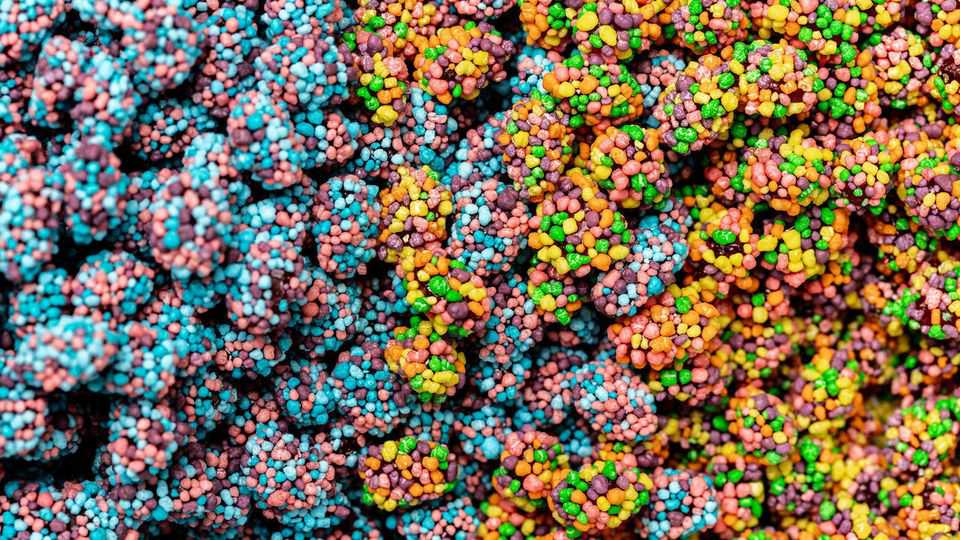

Why your snacks are chunkier and chewier than before
Novelty is increasingly coming from texture, not just taste

Oct 8th 2026
Look at the new snacks people are reaching for in supermarkets and you may notice a trend. From Mondelez, one food giant, there is a Dairy Milk chocolate bar stuffed with crunchy Lotus Biscoff biscuits. From Mars, a rival, there are Skittles Gummy Crystals, which add tiny crackly pieces to chewy sweets, and the “Extra Crunchy” version of its popular Cheez-It crackers. Texture, it seems, is the new taste.
Big food has long engineered every aspect of snacks to make them moreish, from the bright colour of the packaging to the aroma that escapes when it is ripped open. But the heavy emphasis on texture is new. It includes both how a product sounds when it is eaten and what is known in the industry as “mouthfeel”. Mintel, a research firm, reckons that the share of snacks making claims about texture grew from 31% in 2023 to 41% last year. Of those that did, “crunchy” was the most popular description, though “chewy” and “gooey” are gaining fast.
Texture can be hard to cook up. Norberto Chaclin, head of research and development at Mondelez, points out that mixing crunchy and soft ingredients is tricky. Water migrates from moist to dry, turning crisp things soggy. Take the Dairy Milk Biscoff. It was engineered carefully with a shell of milk chocolate to keep moisture out and a layer of fat-based Biscoff spread beside the biscuit crumb to preserve its crunch. The bar went through lengthy testing to ensure its texture held over its shelf life.
Such complexities may explain why foodmakers are struggling to keep up with public interest. By tracking conversation on social media Mintel estimates that in the two years to April demand for “texture-indulgent” snacks in America jumped by 28%. Supply, measured by the sales volume of textured snacks, rose by just 8%.
What is driving the hunger for texture? One explanation is the rise of GLP-1 slimming drugs, which have shrunk patients’ appetites. That means when they reach for a snack they first ask: “Is it worth it?” notes Andrew Wardlaw of MMR, a research firm. A bigger sensory hit, with sound and feel as well as flavour, adds to the “product theatre” and makes snacking more appealing.
Another factor is social media. Young consumers are glued to short videos in which influencers munch food with the volume turned up. Brands have taken note, producing adverts designed to induce ASMR (autonomous sensory meridian response), the tingly, relaxed feeling some get from such content. Posts tagged “crunchtok” racked up over 1.5bn views last year.
The food industry, for its part, sees texture as the last remaining form of differentiation. Mr Wardlaw reckons snacking has reached “peak” taste, with few novel flavours left to explore (without venturing into the unappetising). Most consumers have tried chocolate in all manner of formats, from bars (chunky and mini) to snack bags (family and solo). For many people, snacking has become increasingly mindless, as they scroll social media or binge a TV series.
Rimi Obra-Ratwatte, a nutritionist at Mondelez, likens the demand for texture-rich snacks to the desire to watch a film in 3D. “Everything has become about amplifying an experience,” she explains. Big food will be hoping that consumers don’t tire of that experience soon. Otherwise they may face a different type of crunch time. ■